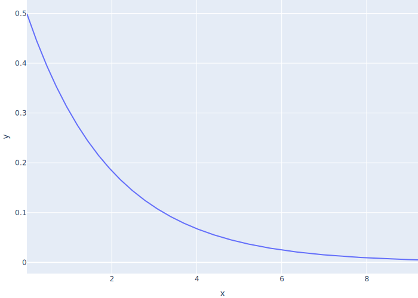
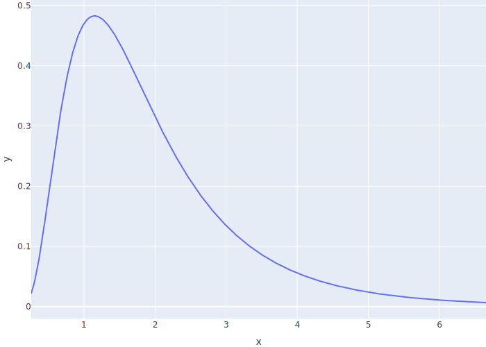
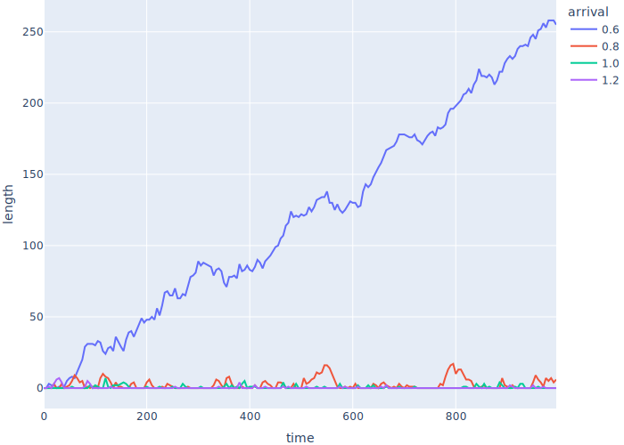
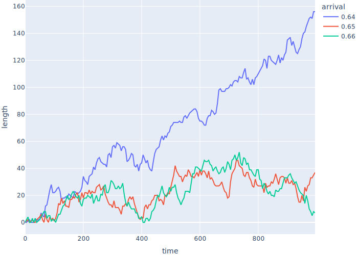

Teams
- Assume probability of manager generating a new job in any instant is fixed
- I.e., doesn't depend on how long since the last job was generated
- If the arrival rate (jobs per tick) is λ, the time until the next job is an exponential random variable with mean 1/λ

- Use a log-normal random variable to model job lengths
- Most jobs are short but there are a few outliers
- If parameters are μ and σ, median is eμ

One Manager with Multiple Programmers
- Store all our parameters in a dictionary
PARAMS = {
"n_programmer": 3,
"seed": 12345,
"t_develop_mu": 0.5,
"t_develop_sigma": 0.6,
"t_job_arrival": 1.0,
"t_sim": 10,
}
- Create a
Simulationclass to hold all our odds and ends
class Simulation:
def __init__(self, params):
self.params = params
self.env = Environment()
self.queue = Store(self.env)
def rand_job_arrival(self):
return random.expovariate(1.0 / self.params["t_job_arrival"])
def rand_develop(self):
return random.lognormvariate(
self.params["t_develop_mu"], self.params["t_develop_sigma"]
)
- Create a
Jobclass to store details of jobs- And teach it how to convert itself to a dictionary for JSON output
- Don't save
t_developbecause that would be cheating
class Job:
SAVE = ("id", "t_create", "t_start", "t_end", "worker_id")
_id = count()
_all = []
def __init__(self, sim):
Job._all.append(self)
self.sim = sim
self.id = next(Job._id)
self.t_develop = sim.rand_develop()
self.t_create = sim.env.now
self.t_start = None
self.t_end = None
self.worker_id = None
def as_json(self):
return {key: rv(getattr(self, key)) for key in Job.SAVE}
Managercreates jobs at random intervals
def manager(sim):
while True:
yield sim.queue.put(Job(sim))
yield sim.env.timeout(sim.rand_job_arrival())
Programmerdoes jobs and bookkeeping
def programmer(sim, worker_id):
while True:
job = yield sim.queue.get()
job.t_start = sim.env.now
job.worker_id = worker_id
yield sim.env.timeout(job.t_develop)
job.t_end = sim.env.now
- Main driver sets things up, runs the simulation, and saves the parameters and job details
def main():
params = get_params()
random.seed(params["seed"])
sim = Simulation(params)
sim.env.process(manager(sim))
for i in range(params["n_programmer"]):
sim.env.process(programmer(sim, i))
sim.env.run(until=params["t_sim"])
result = {
"params": params,
"jobs": [job.as_json() for job in Job._all],
}
json.dump(result, sys.stdout, indent=2)
- Output
{
"params": {
"n_programmer": 3,
"seed": 12345,
"t_develop_mu": 0.4,
"t_develop_sigma": 0.5,
"t_job_arrival": 1.0,
"t_sim": 10
},
"jobs": [
{
"id": 0,
"t_create": 0,
"t_start": 0,
"t_end": 1.388,
"worker_id": 0
},
…other jobs…
{
"id": 9,
"t_create": 9.995,
"t_start": 9.995,
"t_end": null,
"worker_id": 1
}
]
}
- Analysis after 5000 ticks
| result | value |
|---|---|
| mean inter-job arrival time | 0.983 |
| mean job execution time | 1.973 |
| utilization | 0.668 |
- Job arrival time is pretty close to 1.0
- Job execution time is right on
exp(mu + (sigma ** 2 / 2)) - Utilization is close to job time divided by number of programmers
- Queue is essentially empty
- Manager isn't creating enough work to keep programmers busy
Watch the Backlog Grow
- Once Shae's manager realizes the programmers aren't busy 100% of the time, she starts giving them more work
- Use parameter sweeping to Look at effect on backlog
- Move code to run simulation into
Simulationclass - Add a monitoring process that records the queue length every N ticks
- Observation rather than instrumentation
- Clear the log of all jobs each time the simulation starts
class Simulation:
def __init__(self, params):
…as before…
self.queue_lengths = []
def run(self):
Job.clear()
self.env.process(self.monitor())
self.env.process(manager(self))
for i in range(self.params["n_programmer"]):
self.env.process(programmer(self, i))
self.env.run(until=self.params["t_sim"])
def monitor(self):
while True:
self.queue_lengths.append({"time": rv(self.env.now), "length": len(self.queue.items)})
yield self.env.timeout(self.params["t_monitor"])
- Look at queue length over time as a function of arrival times
- Shorter arrival times = jobs arriving more frequently

- The faster jobs arrive, the larger the spikes in backlog
- But the programmers always seem to be able to clear the backlog…
- …until jobs are spaced out by about 0.6 ticks
- Do some math
- Mean job execution time: 1.973 ticks
- Number of programmers: 3
- Jobs executed per tick: 3 / 1.973 = 1.52
- So programmers should be able to handle jobs arriving at a rate of 1 / 1.52 = 0.65 ticks

- Everything is fine until suddenly it's not
A Little Bit of Theory
- λ (lambda) is the arrival rate (the average number of jobs arriving per unit time)
- L is the average number of customers in the system
- W is average time a customer spends in the system
-
Little's Law: L = λW
-
μ (mu) is the service rate (the average number of jobs a single server can serve per unit time)
- ρ (rho) is the utilization (the fraction of time the server is busy)
-
ρ = λ / μ for single-server systems if λ < μ
- If λ ≥ μ, the queue grows without limit
-
Average waiting time in queue Wq = ρ / (μ (1 - ρ))
- Think of (1 - ρ) as spare capacity
- As the system approaches saturation, waiting times increase rapidly
-
If all your programmers are busy 100% of the time, the waiting time for new work explodes
- You must have slack in the system in order to keep waiting times down